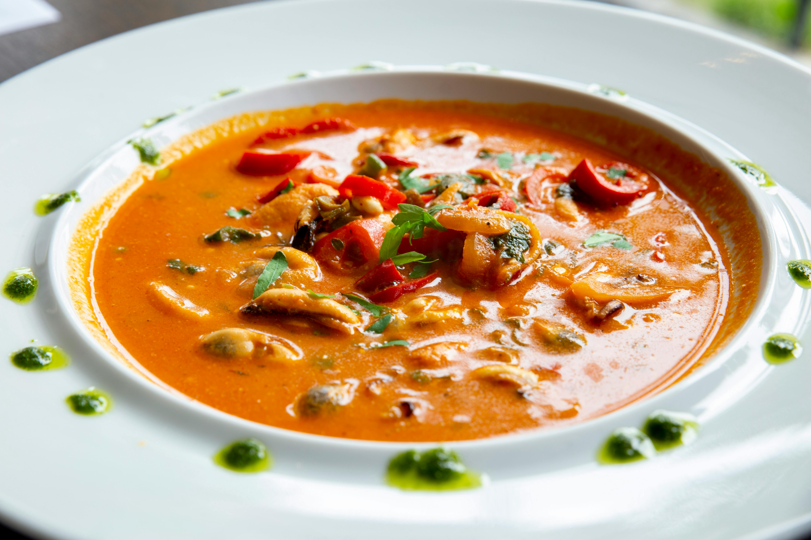

Soups & Salads Recipes

Video
Tomato Basil Soup
Rich and creamy tomato soup with basil.
- Sauté onions and garlic in olive oil.
- Add tomatoes and simmer 20 min.
- Blend smooth, stir in cream & basil.
- Serve hot with croutons.
Video

Sweet Corn Soup
Delicate Indo-Chinese style soup with veggies.
- Boil corn, carrots, and beans.
- Add corn paste, thicken, season.
- Add pepper, soy sauce, garnish.
- Serve hot.
Video